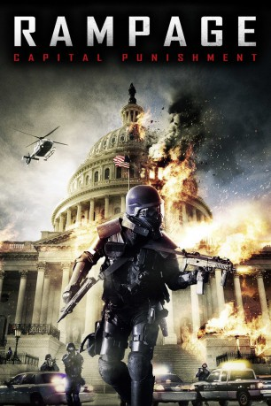

#2034 Rampage 2 - Capital Punishment
 
 IMDB-Wertung: 6.2 / 10
IMDB-Wertung: 6.2 / 10  Metascore: 0
Metascore: 0 
Drei Jahre nach dem verheerenden Amoklauf in einer Kleinstadt sind die Behörden weiterhin auf der fieberhaften Suche nach dem Schützen Bill Williamson. Dieser verbreitet online über Clips und Videos sein radikales Weltbild und findet viele Befürworter. Nun ist die Zeit reif für einen neuen Paukenschlag: Ausgestattet mit automatischen Waffen, richtet Bill in einem lokalen TV-Sender ein Blutbad an und verbarrikadiert sich samt Geiseln im Keller. Dass dies nur der Auftakt von Bills perfidem Plan war, kann die Polizei nur ahnen. Eins ist allerdings glasklar: Für seine Ansichten ist Bill sowohl bereit zu töten – als auch zu sterben.
Jahr: 2014
Dauer: 92 Minuten
FSK: 18
Land: Kanada Studio: Splendid FilmTonspuren: DTS - ,
Untertitel: Deutsch,
Auflösung: 1080p (1920x1080) Größe: 10086 MB
Genre: Action, Thriller, Krimi
Regisseur: Uwe Boll
Drehbuch: Uwe Boll, Uwe Boll, Brendan Fletcher
Soundtrack: Jessica de Rooij
Darsteller:
 Brendan Fletcher als Bill Williamson
Brendan Fletcher als Bill Williamson Lochlyn Munro als Chip Parker - The News Anchor
Lochlyn Munro als Chip Parker - The News Anchor Mike Dopud als Marc
Mike Dopud als Marc Bruce Blain als The Homeless Guy
Bruce Blain als The Homeless Guy- Nathan Lehfeldt als Office Guy / SWAT Guy
 Matt Frewer als Mr. Williamson , uncredited
Matt Frewer als Mr. Williamson , uncredited- Sheldon Trosko als Office Guy / SWAT Guy , uncredited
- Dan Zachary als News Crew Camera man , uncredited
- Michaela Mann als Marlene
- John Sampson als John
Datei: X:\FSK18-Collections\Rampage\Rampage 2 - Capital Punishment (2014, FSK18, 1920x1080).mkv seit 25.09.2015
Festplatte: FSK18
 Alle Filme aus Gruppe 'FSK18-Collections\Rampage'
Alle Filme aus Gruppe 'FSK18-Collections\Rampage'